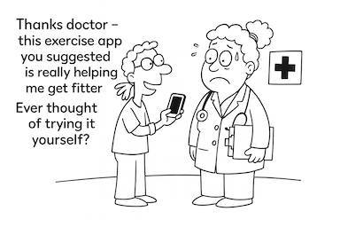
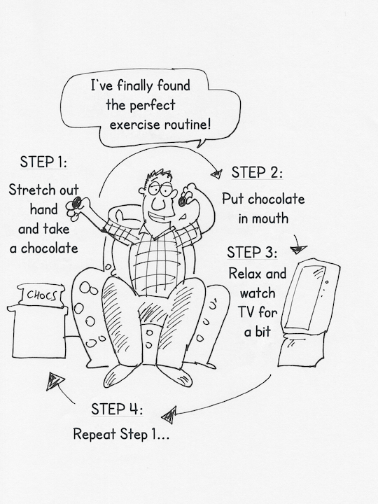
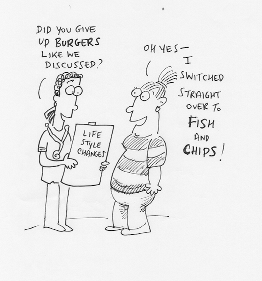

Not Regaining Weight
Phil appears to be naturally slim, with his weight rarely changing from the slim silhouette he has had since he was a youngster. He recognises that “the nation is getting increasingly obese without any corresponding increase in what they eat as regards calories. The difference is that the nation is doing less exercise. My Dad cycled six miles to work each way everyday and on top of that he had an active job. Then at weekends he did gardening, growing lots of vegetables for all of us. It was the way of life for everyone – no- one thought ‘poor Mr Smith’.”

Phil is very active like his father. Although he has a mainly office based job he takes his bike to work in the back of his car and regularly hops onto it for a cycle ride at lunchtime. Once he is at home he is keen to stay active and rarely sits down in the evenings. He enjoys long country hikes at the weekends and takes occasional days off work to walk with a rambling group.
Phil doesn’t usually give his weight a second thought. He last weighed himself two years ago when someone commented that he had lost weight- and he found that he had lost a few pounds of weight, which was really due to his ever active daily life.
Sue has a good tip for people trying to lose weight to help them to understand the magnitude of the problem they have brought upon themselves with their excessive weight. “They could try carrying around x kilos of sugar equivalent to their excess weight to teach them how much extra weight they are carrying around, and how tired they get because of it.” Her friend Penny then carried round seven x two-pound bags of sugar for a whole day to reinforce her determination to lose weight and to teach herself exactly what that extra weight she was carrying felt like. She filled two carrier bags and took them for a walk, to the shops and kept them by her at work whenever she moved round the factory floor.
Sue has managed to integrate regular exercise into her everyday life so that she does it naturally without considering how or whether she is going to fit in an exercise session. Her main message to help other people to keep their weight down is for them ‘to keep active’.
Sue cycles to work as a nurse and any small distances locally, clocking up about 40 miles per week. Sue does not think about her weight much now as the amount of exercise she has keeps it down to what she thinks of as her normal level. Sue does not know her actual weight-she gauges her weight by how big her tummy is. There are no scales in the house. She has never thought of buying any scales. She has never been on a diet.
Sarah illustrates the power of exercise and how someone can change their life for good and incorporate regular exercise as a routine after a seemingly inconsequential occurrence. Of course, in reality, that person was probably contemplating making such a change and something happened that tipped them into actually making the change.
Sarah started exercising when she was > 16 stone in her thirties. She saw the slimmer of the year on a TV show who had reduced from 21 stone to 10.5 stone by starting to run regularly and going on to run in the London marathon. She started by running fully clothed pretending she was running for a bus and when she became slimmer and more confident she started to wear sports clothes when out running too. She never gave up alcohol even then and continues to drink – but limits that to no more than one medium sized glass of wine per day.
You can balance the amount of exercise you do against the weight you want to maintain as Neil and Fiona do. Neil’s main tip is to exert rigid self-control over the type and extent of exercise that you do, and the amount and types of food you eat. Neil is a retired teacher in his early sixties who enjoys being physically active. Much of his life focuses on exercise – he spends money on new bikes or cycling equipment, plans cycling holidays abroad. His favourite way of spending time is walking or cycling or gardening. Neil weighs himself once a week and if his weight has increased, he limits the amount of food in his daily diet for a few days, accordingly. He walks 20 to 60 miles per week and cycles about 100 miles per week.
Roy is aged 53, and a health services manager. Roy believes in rigid self-control over his diet and the amount of exercise he does to counter balance his food intake. Although Roy mainly controls his weight by limiting the amount and type of food and drink to pass his lips, he is also consciously strict with himself about having regular exercise. He is the same weight now as he was as an 18 year old, but it is distributed differently; with a higher proportion of fat around his waistline. He does most of his exercise at the weekend as he works all hours during the week. He has an energetic outlook to life; his style of work is energetic. He is constantly fidgeting rather than sitting still and thinks that this works off calories too.
Pat is a journalist in her mid-thirties. As a single-parent she has a great time with her young kids dancing to music at home in order to stay trim and fit. This keeps her weight down giving her lots of exercise at a time in her life when it is difficult to get out to take exercise without having anyone else at home to take care of the children. She always takes the active option where there is a choice – running up the stairs in the underground instead of taking the escalator, walking to the shops instead of taking the car.
Motivating factors for Sarah to keep to a sensible weight are to be physically able to do a particular activity that she enjoys. Someone advised her that she would be able to ride a horse better if she reduced her weight, so that was all the stimulus she needed to reduce her weight by 1.5 stones. She maintains her lower weight by being careful what she eats all the time – colleagues know that she does not want fattening snacks when they have a work lunch together give her fruit or vegetable alternatives.
Richard is happier controlling his weight by eating less rather than exercising more. He hasn’t got the motivation to keep going doing sufficient exercise to compensate for eating too much. He is easily bored by exercise. He is hostile to the whole concept of exercise and said: “at the end of the day there’s not much point me spending the equivalent of five or six years (doing exercise) just to add five to six years to my life!”
Nigel joined a gym a couple of years ago but didn’t go for long – as a hairdresser he works long hours and found that he was too tired in the morning to go to the gym and it was shut by the time he came home in the evening. But he has to walk the dog twice a day, whatever the weather and that gives him plenty of regular exercise.
Nigel is vague about his wish to be healthy. His wife’s cousin died recently at the age of 50 years old. His death made an impact on Nigel for about six weeks, when he tried to limit the amount of sweets and chocolate he ate. But he rationalised his cousin-in-law’s premature death, realising that the dead man had a generally fatty diet and was a smoker. Nigel doesn’t smoke, has no family history of heart disease and drinks little alcohol – so feels that his ‘vice’ of just eating chocolate cannot be that bad. He does try to limit his craving for chocolate somewhat and has a wider view about diet and health in relation to reducing his risk of cancer.

Nigel eats plenty of apples and bananas to give himself ‘brownie points’ to guard against cancer and “to make up for eating too much chocolate the day before”. Driving is boring (he’s a mobile hairdresser) and he understands that he eats chocolate to relieve the tedium. “I’m quite good at present – I can buy petrol and go into a garage to pay without buying a bar of chocolate too. Every time I buy a chocolate bar I think - I shouldn’t really buy this – but then I do.” “Once I start (trying to limit chocolate) I can do without. It’s a matter of being organised (kicking the chocolate habit). I tried a few months ago and I bought a big bag of apples and left them in the car so that when I was tempted to buy a bar of chocolate (such as passing a garage) I had an apple instead.”
Joe who is aged 45 years old and measures 6’2” has a psychological weight barrier of 100 kgms. He just does not want to cross that barrier. He says “It’s alright being overweight but I don’t want to be obese”.

He once became heavier than 100 kgms. Then he went on a very restricted diet for two weeks of: fruit for breakfast and lunch with a single dish at his evening meal. This brought his weight down by 7-8 kgms within a month. But he was hungry all the time and he doesn’t like being hungry as he gets irritable, headachey and finds it difficult to concentrate; issues and problems get out of proportion until he eats. This annoys his wife.
Joe’s main message for others is: “Set yourself an artificial barrier for your weight and don’t let yourself cross that threshold.”
Anna ensures that she has low calorie food easily available to her: “When I’m driving in the car, I nibble. So, I clean huge packets of carrots and they are available in the car and when I am working at home. If I am driving back home late at night, I allow myself dried fruits and celery. When I am working late one side of my brain tells me that I need chocolate, whilst the other side says that I don’t need it. I feel much better when my weight is controlled more alert and alive.”
Max lost 3.5 stone over the course of two years. He has kept it off since then. He takes plenty of water to fill himself up. He eats plenty of fruit and eats at every meal including breakfast. He cuts out a meal once a week to show he is in control of what he eats, or takes a meal substitute such as ‘slimfast’. Sometimes he uses slimfast to hurry up his weight loss if falling behind his target for maintaining his lower weight. ‘Once you have given in, it is difficult to start again’.
“It’s not rocket science” Pete said when asked how he controlled his weight – “either don’t eat the food in the first place or work it off at work or through regular exercise.” His main message is “If you don’t buy it you can’t eat it. Don’t keep fattening food in the house.”
Pete has had a personal rule for more than twenty years that he does not eat any puddings – not ever – not even at Xmas time. That means that he can drink the alcohol he wants to and that his normal meals are nicely counterbalanced by the energy he expends in running regularly.